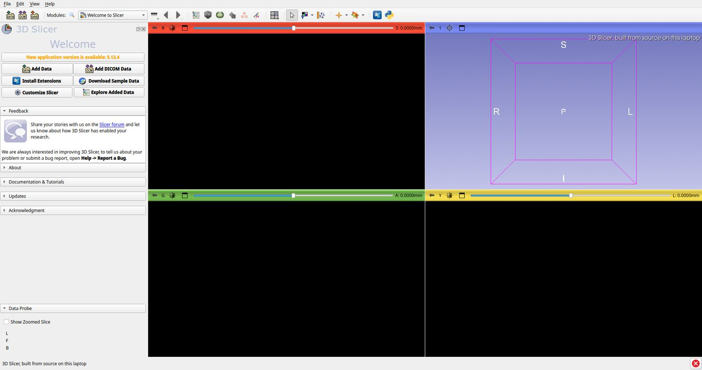
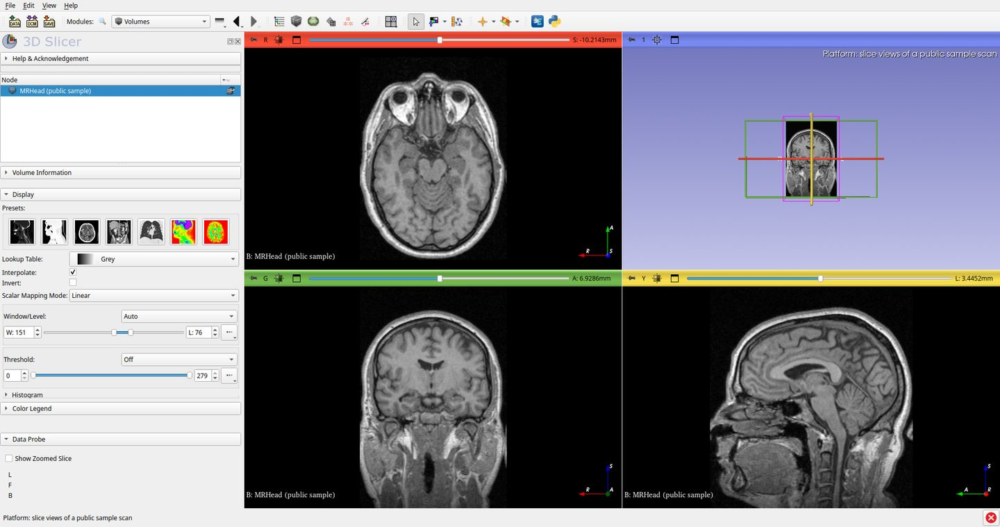
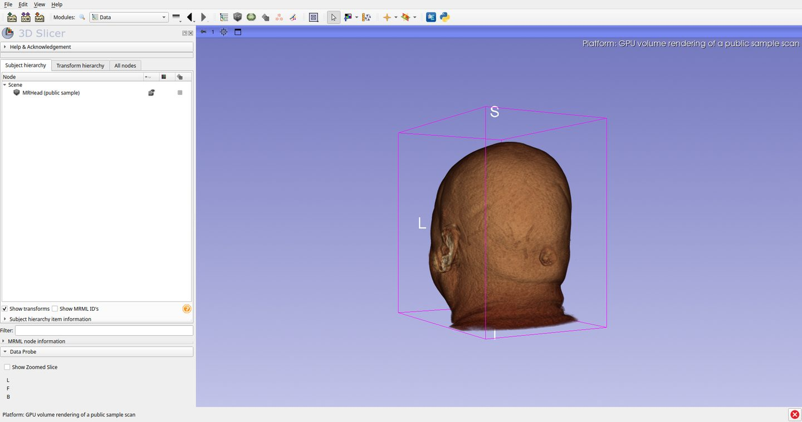
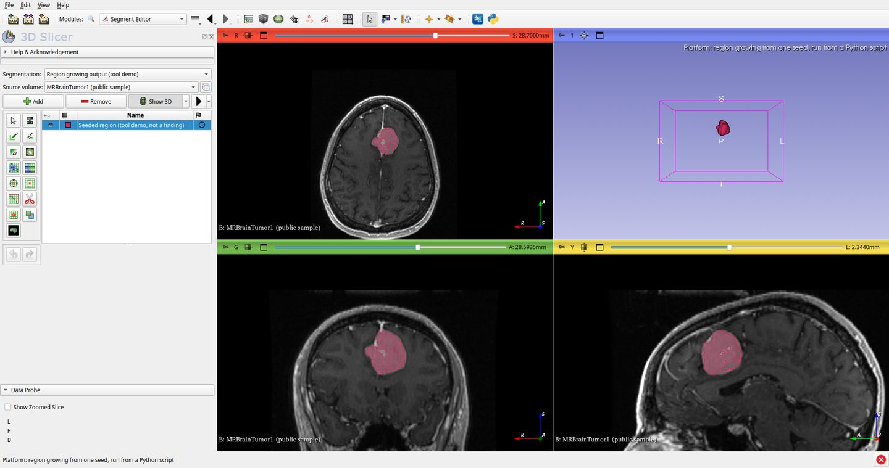
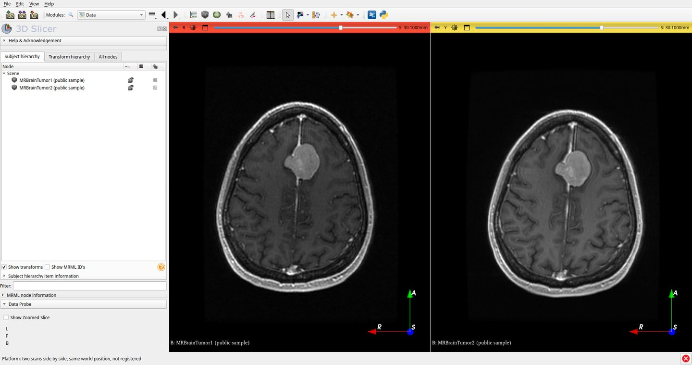
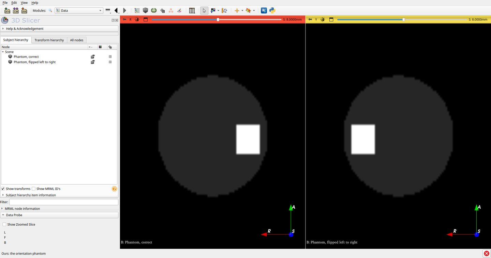
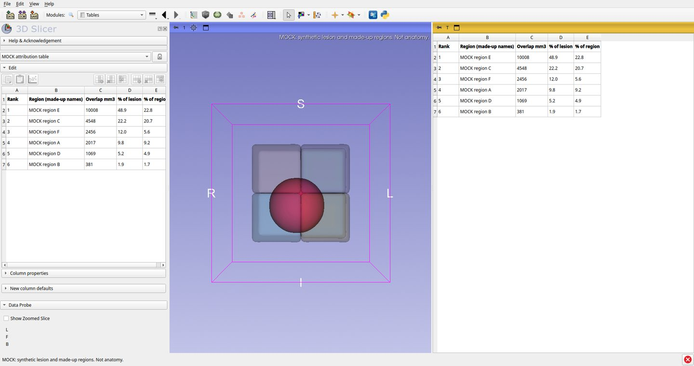

Final year project · briefing for the instructor meeting · prepared 12 October 2026
Building the brain twin on 3D Slicer
We want to build our brain digital twin as an offline desktop application on top of 3D Slicer, an open-source medical imaging platform, instead of writing the imaging and visualisation layer from scratch. This page shows what we would reuse, what we would build ourselves, why we chose this stack, and what runs on the laptop today.
The ask, and the state of things
Four numbers, all read from the working tree on 12 October 2026.
5.12.33D Slicer version, built from source on our laptop. The finished build is 6.9 GB.
146Slicer modules that load in our build: 51 CLI, 27 loadable, 68 scripted. Counted by asking the running application.
271of our own automated tests pass, in under 3 seconds, on every commit.
0of our application modules exist yet. That is on plan: the measuring tools were built first.
What "initial build" means. What you will see running is stock 3D Slicer, compiled by us. It is not yet branded and it does not yet contain our modules. The demonstration shows the foundation and the first pieces of our own work beside it, and it labels which is which at every step.
The idea in one picture
One patient study goes in. A measured, anatomically located description of the lesion comes out, and stays in a record that follows the patient over time. Ischemic stroke first, then glioma: the two disorders the neurologist we interviewed named as most common.
Platform supplied by 3D SlicerOurs we design and build
PlatformRead the scanDICOM import, local database, viewing
→
OursIngestWork out which series is which, check quality, remove identifiers
→
PlatformAlignRegistration to an atlas, run and recorded by our pipeline
→
OursMeasure the lesionSegmentation, volume, change since last scan
→
OursLocate itLesion mask intersected with atlas regions, ranked, with uncertainty
→
OursKeep the recordScans, scores, history and family history on one timeline
The tool supports a clinician's reading. It does not diagnose, does not plan surgery, and is not approved for clinical use. Every statement it shows is either computed from the data or carries a citation.
What we reuse and what we build
3D Slicer is a Qt, C++ and VTK application with a module system. We do not fork it or patch it. We configure it and add our own modules on top.
Body layerOrgan registry, patient record, timeline, provenance, exportOurs
Organ modulesBrain in depth. Other organs plug into the same contract later.Ours
Core servicesIngest, preprocessing pipeline, region attribution, evaluation harnessOurs
Platform3D Slicer: scene model, VTK rendering, ITK image processing, DICOM database, Qt interface, PythonReused as is
Platform What Slicer gives us on day one
DICOM import and a local study database
Slice views, 3D views and GPU volume rendering
Segment Editor, manual and semi-automatic
Registration: rigid, affine and deformable
Measurement tools: points, lines, angles
Scene save and load, a Python console, cross-platform installers
Licences are permissive: Slicer, VTK, ITK and CTK are BSD-style, the custom application template is Apache-2.0, Qt is LGPL when dynamically linked. Our own code is Apache-2.0.
Ours What does not exist in Slicer
Ingest sequence classifier. Decides which series is T1, FLAIR and so on.
Region attribution engine. The core contribution.
Deficit hypothesis layer. Cited, ranked, never presented as a conclusion.
Longitudinal neuro record and timeline.
Trajectory planner. Stretch goal.
Evaluation harness. Partly built already.
The sentence every team member should be able to say:
The platform is 3D Slicer, as declared. Our contribution is the ingest sequence classifier, the region-attribution engine, the deficit-hypothesis layer, the longitudinal neuro record module, the trajectory planner, and the evaluation harness. None of these exist in Slicer or any comparable free tool.
Why this stack
We considered five ways to build the application, and benchmarked three native stacks against one matched task before deciding. The decision is recorded as ADR-003.
Option
For
Against
Custom 3D Slicer application Chosen
It already is Qt, C++ and VTK, the stack we wanted. Imaging tools come with it. Its module system is our organ plugin system. Python modules let everyone contribute from day one.
Large codebase to learn. Slow first build. We must state clearly what is ours.
Bare Qt and VTK from scratch
Full control.
Months rebuilding import, viewing and segmentation tools, with no gain we could evaluate.
Rust with wgpu
Fastest and smallest in our benchmark.
No medical volume-rendering template and no imaging ecosystem. The team would learn Rust and neuroimaging at once.
Avalonia on .NET
Cross-platform, a commercial rendering engine exists.
Slowest to start. Its rendering test was never measured. Smallest imaging ecosystem.
Web prototype wrapped as a desktop app
Reuses our earlier proof of concept.
Wrong architecture for an encrypted, offline, long-lived patient record.
What the benchmark measured
Tier 0 is a Hello World window on each stack, which isolates the cost of the toolchain itself. Medians of 5 runs, one capture batch (31 July 2026), on the same laptop. Lower is better in all four.
Cold start, unrestricted
milliseconds, integrated GPU
Rust47.3
Qt, C++104.3
Avalonia804.2
Cold start, low-end machine
milliseconds, limited to 4 GB RAM and 50% CPU
Rust65.5
Qt, C++161.3
Avalonia1834.7
Memory when idle
megabytes
Rust26.3
Qt, C++70.0
Avalonia138.6
Size of what we would ship
megabytes, with required libraries
Rust7.5
Qt, C++69.8
Avalonia97.3
Tier 1 is the real task: a brain volume, a mesh and an overlay rendered together. Only the Rust build completed the full matrix (2 August 2026, medians of 5, display synchronised to a 60 Hz panel).
Rust, Tier 1 cell
Frames per second
95th / 99th percentile frame, ms
Verdict
Integrated GPU
59.5
17.8 / 20.6
Pass
Dedicated GPU (MX230)
59.9
17.6 / 18.3
Pass
Integrated GPU, 4 GB RAM, throttled CPU
59.6
17.7 / 20.5
Pass
No GPU, software rendering
4.1
363.7 / 578.2
Fail. The task needs a GPU on any stack.
What we do not claim. We do not claim Qt beat Rust on rendering speed. Rust passed Tier 1. Qt with VTK has a single Tier 1 run on record (50.1 frames per second, below the five-run minimum, so not a result) and Avalonia has none.
The decision rests on four other grounds: Slicer already is the stack we intended, it supplies most of the imaging groundwork, Rust has no medical imaging ecosystem to build on, and Python modules let the whole team contribute. Rendering speed was not the deciding criterion.
Where we are today
Last working session: 17 August 2026. We built the instruments that measure the product before the product, on purpose.
Built and passing
3D Slicer 5.12.3 compiles and runs on our Fedora laptop
Orientation assertion: a synthetic phantom that catches a left-right flip (85 tests)
All six thesis results tables, generated with every row marked pending
Pipeline stage 3 of 13: reorientation and resampling
Check that no patient identifier reaches a log (21 tests)
Organ manifest schema and validator
Continuous integration: tests, lint, type checks on every commit
Not built yet
The branded application shell
Every application module, including region attribution
12 of the 13 pipeline stages
Dataset downloaders. No dataset is on the machine yet.
Any segmentation model
Blocked on one decision: ADR-006, the coordinate space and the atlas. Template registration, parcellation and region attribution cannot be written correctly until it closes.
The plan: six rungs, one of which is the thesis
Each rung must produce a number that lands in a results table. Fidelity targets: D is demonstrator, F is functional, V is validated.
Atlas and body shellNavigable body, brain labelled in depth, organ registry. Number: label coverage, render frame rate.
Target F · weeks 8 to 12
R2
Patient mapping, disorders and the longitudinal recordSegmentation, registration, region attribution, cited hypotheses, the record. Numbers: Dice, HD95, ASSD and agreement of region attribution with an expert reading. This is the thesis.
Target V · weeks 13 to 22, hard gate
R3
Virtual neuronavigationTrajectory planning in software only. Number: planning task time.
Target F · weeks 23 to 28
R4
VR reviewThe same scene in a headset. Number: task performance against desktop.
Target D · weeks 27 to 31
R5
Tracked hardware prototypeA tracked stylus on a head phantom. Number: registration error in millimetres.
Target D · weeks 27 to 31
If R2 does not have real numbers in a table for at least one disorder by its gate, R3 to R5 are cut and R2 is deepened. One validated capability is worth more than five shallow ones.
The demonstration, step by step
Eleven steps, run by demo/run-demo.sh. The terminal prints the same step numbers. Screenshots below are from the rehearsal on our laptop on 12 October 2026.
Platform stock 3D Slicer, not our workOurs code in our repositoryMock synthetic data, a result we have not built
Step 1
Preflight
Check
What you see
The terminal confirms the Slicer build, the Python environment, the three public sample scans with matching checksums, the phantoms and a display. No network is needed from here on.
Say
"Everything in this demonstration runs on this laptop, offline. That is a requirement of the product, not a convenience."
Step 2
The base: 3D Slicer, built from source
Platform

What you see
Slicer opens. The terminal prints the version and the module count, read from the running application.
Say
"This is the open-source platform. We compiled it ourselves, which cost about two days and two fixes specific to our Linux version. It is not our work and we will always say so."
The number
146 modules: 51 CLI, 27 loadable, 68 scripted.
Step 3
Load a scan from local disk
Platform

What you see
MRHead, a public sample scan, in axial, sagittal and coronal views, with the three planes shown together in 3D.
Say
"Reading and viewing a scan is solved. We do not want to spend our months rebuilding this."
The number
256 x 256 x 130 voxels, read in a fraction of a second.
Step 4
3D volume rendering
Platform

What you see
The same scan rendered as a 3D volume on the laptop's integrated GPU. Drag to rotate, scroll to zoom.
Say
"This renderer is the single largest thing we would otherwise have had to write ourselves."
The number
About 34 ms per frame in rehearsal. Informal, not a benchmark figure.
Careful
Do not open the Volume Rendering module from the module menu. In our build that panel closes the application. The rendering itself is fine.
Step 5
Segmentation tools, driven from Python
Platform

What you see
A second public sample, MRBrainTumor1. A script grows a region from one seed point using ITK, then Slicer measures its volume.
Say
"Our modules will drive these tools from Python exactly like this. And look at the three volumes: one setting moves the answer from 8.7 to 16.6 cm3. That is why we built the scoring harness before any segmenter."
The number
8.7, 13.2 and 16.6 cm3 for three settings of one parameter. None of them is a result.
Careful
This is a tool demonstration. It is not our segmenter, it is not validated, and the region is not a clinical finding.
Step 6
Two scans side by side
Platform

What you see
MRBrainTumor1 and MRBrainTumor2, the public pair Slicer's own registration example uses, at the same world position.
Say
"Slicer can show two scans. It cannot tell you what changed between visits, alongside the patient's scores and history. That record and timeline are what we add. Our landscape review found no free tool that has it."
The number
The two grids differ (112 slices at 1.4 mm, 130 slices at 1.2 mm), so they must be registered before any comparison.
Step 7
Our orientation phantom
Ours

What you see
Two synthetic volumes we generate. One is correct. One has left and right swapped. Both open without any warning.
Say
"If a pipeline step flips left and right, the lesion lands in the wrong hemisphere and nothing looks wrong. This is the failure that silently invalidates a whole project, so we test for it on every commit."
The number
Marker centre at x = -16.0 mm (patient left) in the correct file and +23.0 mm (patient right) in the flipped one.
Step 8
Our test suite and the empty results tables
Ours
What you see
In the terminal: the full test suite, the orientation tests alone, the organ manifest validator, and thesis results table 4.1 with every cell marked pending.
Say
"The results chapter already has its tables. They are empty, and the code that will fill them is tested against answers we computed by hand. We cannot quietly drop a row that looks bad."
The number
271 tests passing in under 3 seconds. 85 of them are the orientation assertion.
Step 9
The result we are building toward
Mock

What you see
A synthetic sphere standing in for a lesion mask, six boxes with made-up names standing in for atlas regions, and a ranked table of how much of the lesion falls in each.
Say
"This is the shape of our core contribution, on fake data. The real version uses a real atlas and a registered patient scan, adds an uncertainty statement to every row, and is scored against an expert's reading. Every region is listed, even at zero. We rank, we never hide."
The number
Top region holds 48.9% of the synthetic lesion. Computed live from the mask, not typed in.
Careful
Say "mock" out loud. Nothing on this screen is anatomy.
Step 10
The stack comparison we ran
Evidence
What you see
The terminal prints the recorded benchmark medians straight from the results file of the earlier comparison project. The charts are in Why this stack.
Say
"Rust won the speed test and we still chose Slicer. A fast empty window does not read a DICOM study. We chose on what the platform gives us and on what the team can learn in the time we have."
"These four we need from you today. The other five are where your guidance would save us weeks."
Risks and gaps we already know about
The build is not yet reproducible
Two fixes for our Linux version (Fedora 44, Qt 6) live only inside the build folder. A clean rebuild on another machine would rediscover them. They are written up in docs/15 but not automated.
Two panels misbehave in our build
Found during rehearsal: opening the Volume Rendering module panel closes the application, and the Segment Editor's Smoothing panel raises an error. Both come from running Slicer 5.12.3 against a newer Qt than it expects. The underlying functions work.
The atlas decision blocks the core work
ADR-006 is open. Until the coordinate space and parcellation are chosen, registration, parcellation and attribution cannot start.
No data on the machine
Stroke and glioma datasets need signed use agreements before download, and the agreements forbid redistribution. This paperwork is the longest lead-time item.
The stack evidence is incomplete
The rendering comparison finished for one stack of three. We say so in the decision record and do not present it as a win for Qt.
Schedule
The last working session was 17 August 2026. The R2 gate is fixed at week 22 of the plan, so the weeks since then come out of the time before that gate.
Decisions we need
Four from you today. Five where your input would unblock us.
Today · 1
May we build on 3D Slicer?
Open source, BSD-style licence, attribution required. The alternative is months rebuilding import, viewing and segmentation tools.
Today · 2
Is the contribution boundary acceptable?
The platform is declared as reused. We ask to be assessed on the six components we originate and on the numbers they produce.
Today · 3
Is an offline desktop application the right form?
Qt, C++, VTK and Python, on a single laptop with no server and no internet, because patient data should not leave the machine.
Today · 4
Is R2 the evaluated thesis?
Lesion to region to record, validated for stroke then glioma. Navigation, VR and hardware are stretch goals with written cut-off rules.
Input · 5 · blocking
Coordinate space and atlas (ADR-006)
Our recommendation: compute in atlas space, display in the patient's own space, Desikan-Killiany for cortex and the JHU atlas for white matter. Licences still to verify.
Input · 6
Primary user (ADR-004)
Our recommendation: neurologist first, trainee second. The neurologist is our clinical contact and needs the longitudinal record most.
Input · 7
Cognitive instrument (ADR-005)
MMSE is commercially licensed and cannot ship. Our recommendation: MoCA if its academic terms are confirmed in writing, otherwise Mini-Cog.
Input · 8
Record store (ADR-007)
Our recommendation: SQLite with a vetted encryption extension. One file, real queries, simple backup.
Input · 9
Data agreements and ethics route
Who signs dataset use agreements for the department, and which ethics route applies to retrospective de-identified scans.
Questions you will likely get
"So what did you actually build?"
Say the contribution sentence. Then: today, the orientation assertion, the evaluation harness, pipeline stage 3 and the validator. Next, the six components listed under Reuse and build.
"Is reusing Slicer allowed?"
Yes. It is released under a permissive BSD-style licence that allows building other applications on it, with attribution. A template exists for exactly this purpose.
"Rust was faster. Why not Rust?"
It was, on an empty window and on one rendering scene. It has no medical imaging ecosystem, so we would write DICOM handling, registration and segmentation tooling ourselves. Speed was not the deciding criterion, and we say that in writing.
"Why not start from scratch and learn more?"
We would spend the year reaching what Slicer does on day one and have nothing new to evaluate. Reusing the platform moves our effort to the parts nobody has built.
"Can a doctor use this on patients?"
No. It is a decision-support and record-keeping research tool. It shows a non-clinical-use disclaimer at startup, does not diagnose, and is not approved for clinical use.
"How will you prove it works?"
With numbers against ground truth: Dice, HD95 and ASSD for segmentation on public datasets, and agreement of region attribution with an expert reading. The tables for those numbers already exist.
"What if Slicer turns out to be too slow?"
We write modules in Python first and port only measured hot paths to C++. If a profiled measurement shows the platform cannot meet a stated requirement, the decision record says we revisit.
"Why is there no product yet?"
By design. We built the measuring instruments first so that the first real result has somewhere honest to land. The application layer starts once the atlas decision closes.
Glossary for the team
3D Slicer
Open-source desktop application for medical image viewing and analysis. Our platform.
Qt, VTK, ITK, CTK
The libraries Slicer is built from: Qt for the interface, VTK for 3D rendering, ITK for image processing, CTK for medical widgets and DICOM.
MRML scene
Slicer's in-memory model of everything loaded: volumes, segmentations, tables, views. Modules talk to each other through it.
Module
A Slicer plugin. Scripted modules are Python, loadable modules are C++, CLI modules are standalone programs Slicer runs.
Superbuild
Slicer's build process, which compiles Slicer and all of its dependencies in one long run.
DICOM
The file and metadata standard scanners produce. One study contains several series.
Segmentation
Marking which voxels belong to a structure or a lesion. The output is a mask.
Registration
Aligning one image to another, or to an atlas, so the same position means the same anatomy.
Parcellation
An atlas that divides the brain into named regions.
Region attribution
Intersecting a lesion mask with a parcellation to say which regions are involved and by how much. Our core contribution.
Dice, HD95, ASSD
Segmentation scores against ground truth. Dice is overlap from 0 to 1. HD95 and ASSD are boundary distances in millimetres.
Phantom
A synthetic test volume with a known answer. Ours is deliberately lopsided so a flip is detectable.
ADR
Architecture decision record. One file per decision we would have to defend, in docs/DECISIONS.
Rung, R0 to R5
The six stages of the build plan. R2 is the thesis.
Run it
Commands
cd ~/Projects/BrainTwin_Desktop
demo/run-demo.sh --check # tonight, and again before the meeting
demo/run-demo.sh --auto # full rehearsal, no prompts, about a minute
demo/run-demo.sh # the real thing
y or Enter next · b back · r repeat · 1 to 11 jump · l list · q quit
Slicer stays open across steps, so going back is instant. If you close its window by accident, press r and it restarts.
Before you walk in
Plug in the charger. The first Slicer start takes about twenty seconds.
Run --check and then --auto once on the projector's resolution.
Put the terminal and this page side by side, Slicer on the projector.
Close heavy applications. The laptop has 15 GB of RAM.
If the sample scans are missing, demo/fetch-data.sh needs internet once.
Do not open Volume Rendering from the module menu.